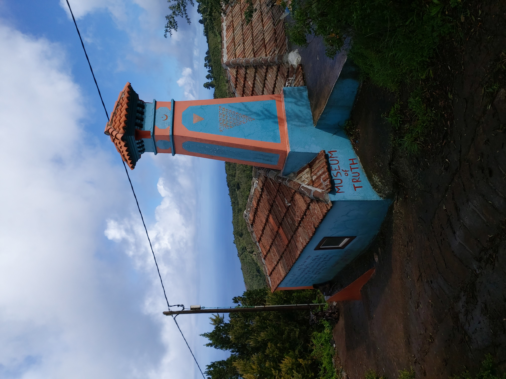
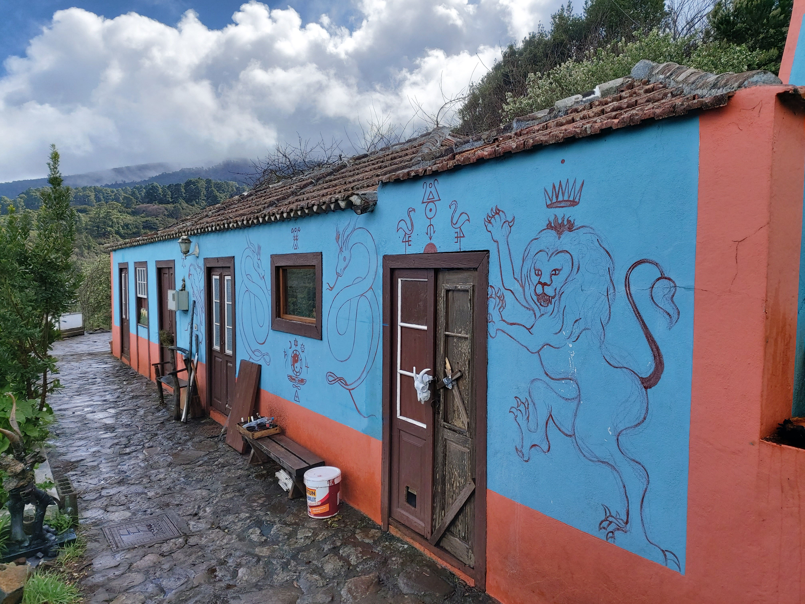
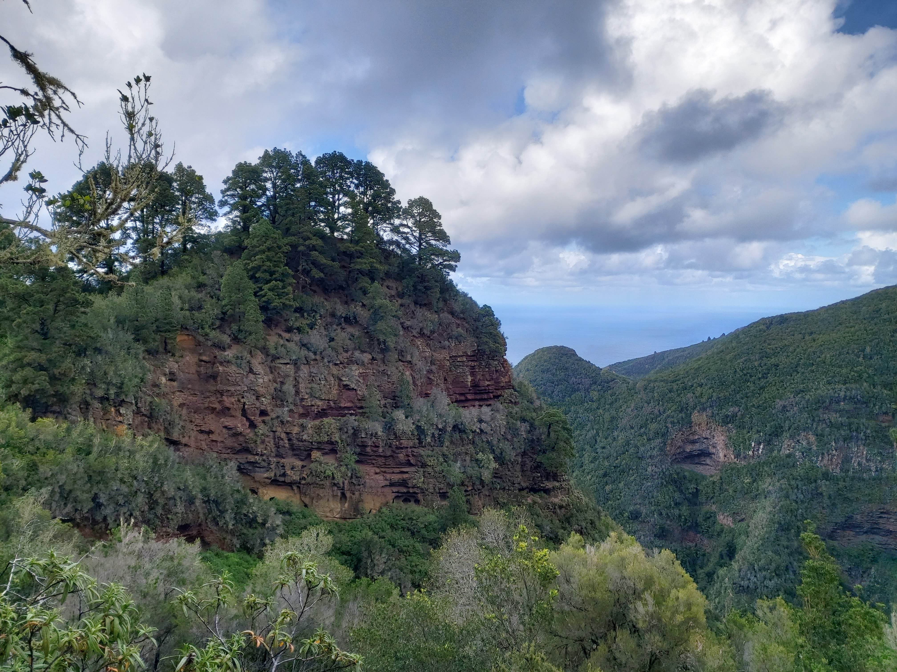
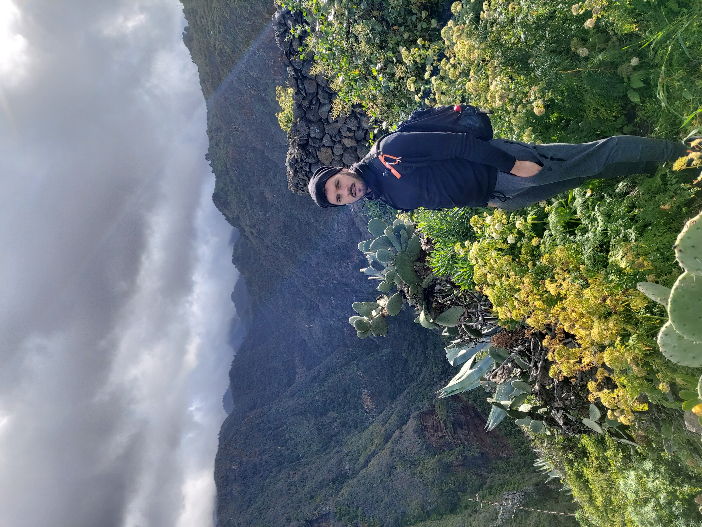
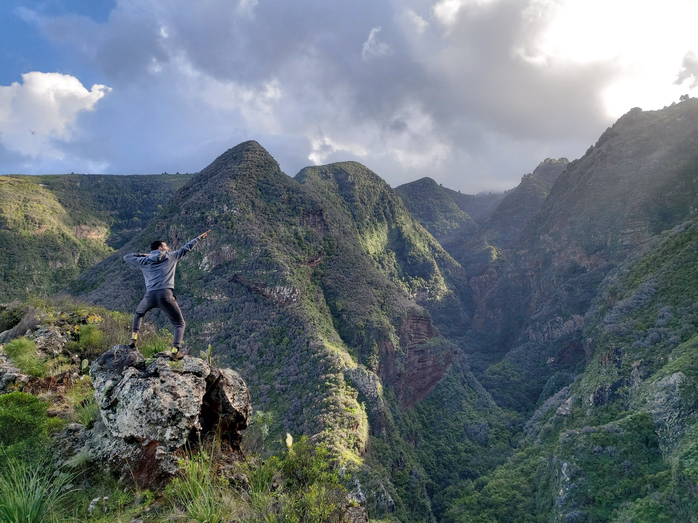

We set off to the north side of the island to explore the Guelguén national park. Barranco de los Hombres is a canyon carved by a river that starts from La Caldera de Taburiente and flows to the northern coast. We started from a small village Roque Faro and followed the marked trail towards El Tablado, towards the ocean. The first stretch was unassuming, simply walking down the road through a local neighborhood, with some interesting houses along the way.
 Eventually the pavement ended, but the road continued through the mud. The hill was slippery and we took our time in the descent. We finally arrived at the door to the forest, and took our first steps into a fantasy land. The trail dipped in and out of tree cover, giving little teases of the ocean below.
![[Museum of Truth]](images/enter_narnia.jpg)
The trail continued to weave back and forth through the woods until opening up to our first true view of the canyon we had been following. A few twists and turns later, we were met with a spectacular view of the ocean. What a pleasant surprise, given the lackluster beginning to this trek.
![[Museum of Truth]](images/first_ocean_view.jpg)
The trail opened up to the road on the outskirts of El Tablado. We still had a spectacular view of the ocean below, and were greated by some lovely plants along the way.
![[Museum of Truth]](images/beautiful_plants.jpg)
Finally, we reached the village, and stopped for lunch at the mirador within the city. The canyon was to our backs with the ocean to our front. The peered in and out of the clouds, illuminating the canyon. The waves roared below... clearly the ocean was having a rough day. It was a moment of savage tranquility.
After lunch, we ventured down a bit into the canyon to Cueva del Canga. The cave formed a small island between the mouth of the canyon and the ocean, giving gave us a view straight up into Barranco de los Hombres. The view was awe inspiring, and made us feel so tiny.
From this point, we started our return back up the road from El Tablado, then again through the forest. The ascent was much easier and we made good time. We were able to appreciate the plants much more as we were concerned with falling on our faces. The air was crisp, but we kept warmth through our exercise. With sore legs with finally arrived back at Roque Faro, ending this incredible journey :D
![[Image Not Displayed]](images/christmas_stone.jpg)